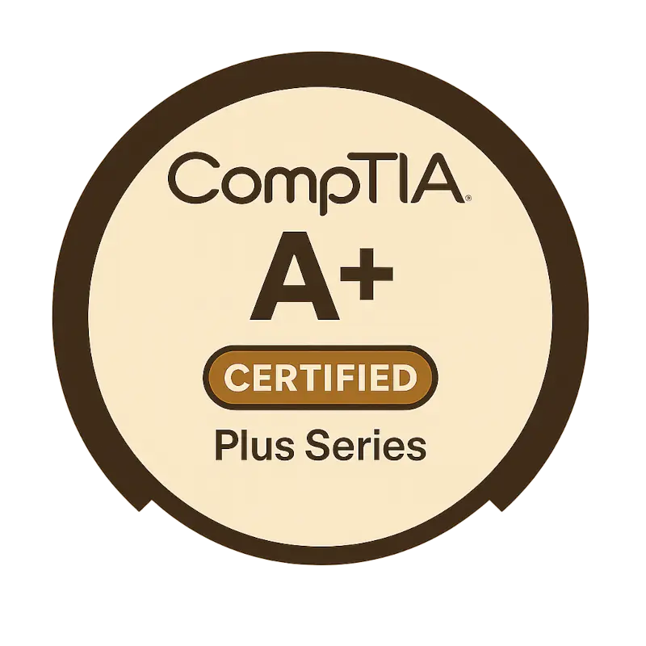

CompTIA A+
In November 2024, I completed the CompTIA A+ 1101/1102 certification, a globally recognised qualification that confirms my expertise in configuring, troubleshooting, and supporting hardware, operating systems, mobile devices, and networks. It also covers essential cybersecurity practices, cloud computing, and virtualisation. These skills ensure I can manage and maintain today’s complex IT environments effectively. This certification strengthens both my technical capability and my teaching practice, enabling me to deliver industry-relevant content and support learners with real-world, practical insights across education and business settings.
CompTIA ITF+
The CompTIA ITF+ certification demonstrates my comprehensive understanding of essential IT skills, including hardware components, software installation, file management, and troubleshooting techniques. It also covers basic networking, cybersecurity principles, database concepts, and programming logic. This broad foundation enables me to introduce key IT topics with clarity and relevance, making complex concepts accessible to beginners. It supports my ability to teach entry-level learners with confidence, helping them build strong digital literacy and progress towards more advanced technical subjects in both educational and professional environments.
Level 5 Graphic Design Diploma
The Level 5 Diploma in Graphic Design equipped me with advanced creative and technical skills across digital illustration, photo editing, layout design, and branding. I developed proficiency using industry-standard tools like Photoshop, Illustrator, GIMP, and Inkscape, while strengthening my understanding of colour theory, typography, composition, and visual storytelling. This qualification enhanced my ability to design clear, engaging visual content for both educational and professional use. Whether creating UI elements, marketing assets, or instructional materials, I apply design principles that communicate ideas effectively and support user experience.
Cisco CCNA
The Cisco CCNA Exploration certification has equipped me with in-depth knowledge of networking concepts, including LAN and WAN design, IP addressing, routing protocols, switching, and network security. Through practical, hands-on experience, I gained the skills to configure routers and switches, troubleshoot network issues, and manage scalable, secure networks. This certification deepens my understanding of how data flows across systems and enhances my ability to teach networking topics with real-world relevance. It also strengthens my capability to support and maintain IT infrastructure in both educational and business environments.
PGCE in Computer Science
Completing my PGCE in Computer Science provided me with advanced pedagogical skills and a deep understanding of how to deliver technical content effectively to diverse learners. I developed expertise in curriculum planning, assessment design, classroom management, and inclusive teaching strategies. The qualification also strengthened my ability to differentiate instruction, support students with varying abilities, and integrate technology into learning. Combined with my industry background, the PGCE enables me to connect theoretical knowledge with real-world application, creating engaging, structured, and supportive learning experiences in the classroom.
BSc Hons Computer Science
Earning a BSc (Hons) in Computer Science gave me a strong foundation in programming, algorithms, data structures, software engineering, and database design. I developed practical skills in multiple languages, including Python, Java, C, and SQL, and gained hands-on experience with system architecture, networking, and web development. The degree also sharpened my analytical thinking, problem-solving, and project management abilities. This academic background supports my capacity to teach complex computing concepts with clarity and relevance, while also enabling me to apply technical knowledge effectively in both educational and professional IT settings.
ECDL
The ECDL (European Computer Driving Licence) certification demonstrates my proficiency in essential IT user skills, including word processing, spreadsheets, databases, presentations, and internet use. It confirms my ability to work confidently with Microsoft Office tools and manage digital tasks efficiently in both academic and professional settings. This certification enhances my ability to teach digital literacy, helping learners develop the practical skills needed for everyday computing, study, and the workplace. It also supports wider digital inclusion by promoting competent, safe, and effective use of technology. These skills are essential for building confidence and independence in today’s digital world.
Software Developer Diploma
I’ve completed various diplomas in software development, gaining strong skills in C++, Java, Python, and PHP—from beginner to advanced level. I’ve built a solid understanding of programming concepts, algorithms, object-oriented design, and data handling. I also have hands-on experience with .NET technologies, including C#, ADO.NET, and SQL Server, enabling me to create functional, database-driven applications. This combination of structured training and real-world practice allows me to teach programming clearly and effectively across multiple languages, while also delivering practical solutions in both educational and professional environments.